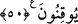

Kâsım! Biz Yahûdî âlimleriyiz. Biz sana îman edersek bütün yahûdîler de sana îman
eder. Bizimle kavmimiz arasında bir ihtilaf var. Seni hakem tâyin edelim. Sen bizim
lehimize, onların aleyhine hüküm ver, biz de sana îman edip seni tasdik edelim.”
Rasûlullah (a.s.) bunu reddetti. Bunun üzerine bu âyetler indi.
Bazı âlimler bu âyeti peygamberler için hatâ ve unutmanın câiz olmasına delil kabul
ederler. Çünkü Allah Teâlâ: “Allah’ın indirdiği hükümlerin bir kısmından seni
şaşırtmalarından sakın!” buyurmuştur. Bu gibi şeyleri kasıtlı yapmak ise onlar
hakkında söz konusu değildir. Geriye ise yalnız hatâ ve unutma kalmaktadır.
“Eğer” Allah Teâlâ’nın indirdiğiyle hükmedilmeyi kabul etmez “yüz çevirirlerse” ve
başka bir hüküm isterlerse “bil ki” onların bu yüz çevirmelerinin sebebi “Allah bazı
günahları yüzünden onları felakete uğratmak istiyor.” olmasıdır. Yani, Allah Teâlâ
dünyâda seni onların üzerine göndererek hemen cezâlandırmak; ölüm, sürgün ve cizye
gibi cezâlarla dünyâda, ebedî azapla da âhirette cezâlandırmak istiyor.
Âyette bahsedilen ‘bazı günahları’, Allah Teâlâ’nın hükmünden yüz çevirmelerinin
günahıdır. Böyle ifade edilmesi, yahûdîlerin bir çok günahları bulunduğuna bu günahın,
büyüklüğüne rağmen onlardan sadece bir tanesi olduğuna işaret etmek içindir.
“İnsanlardan çoğu zaten yoldan çıkmış(fâsık)lardır.” Küfürde inat ve ısrar
etmektedirler. Kendileri için tayin edilen sınırların dışarısına çıkmaktadırlar. Bu
sebeple de Allah’ın hükmünden yüz çevirmektedirler.
50- Yoksa onlar câhiliye devrinin hükmünü mü arıyorlar? Oysa yakînen bilen bir
toplum için, Allah’tan daha güzel hüküm veren kim vardır?
“Yoksa onlar câhiliyye devrinin hükmünü mü arıyorlar?” Bu ifade, onların hallerine
hayret ve onları kınama ifadesidir. Yani, senin hükmünden yüz çevirip cahiliyye
hükmünü mü arıyorlar. Halbuki hevâ ve câhillikten ibâret olan câhiliyye dîni, ne bir
kitaptan çıkar ve ne de bir vahye dayanır.
“Oysa yakînen bilen bir toplum için” Yani, bu soru yakînen bilen bir toplum içindir.
Çünkü onlar işleri tetkik ederek düşünür ve Allah’ın hükmünün en güzel ve en adil
hüküm olduğunu yakînen bilirler. Allah’ın hükmü yalnız bir kavme has değildir.
“Allah’tan daha güzel hüküm veren kim vardır?” ifadesi, hükmü Allah Teâlâ’nın
hükmünden daha güzel ve ona denk birinin olabileceğini reddetmektedir. Gerçi âyette
hükmü Allah Teâlâ’nın hükmüne denk birinin olamayacağı açıkça beyan edilmemiştir.
Ama genel örf ve dilin genel kullanımı bunu gerektirir. Çünkü ‘Filandan daha cömert
kim vardır?’ veya ‘Filandan daha fazîletli kim vardır?’ denildiğinde bu kimsenin
tereddütsüz daha cömert ve daha fazîletli olduğu anlaşılır.
Bu âyetler, dinlerin asıllarının bir olduğuna, farklılığın tâlî konularda olduğuna delalet
eder. Allah Teâlâ’nın, her asır ve zamanda istediği gibi hükmetme hakkı vardır. Bunda